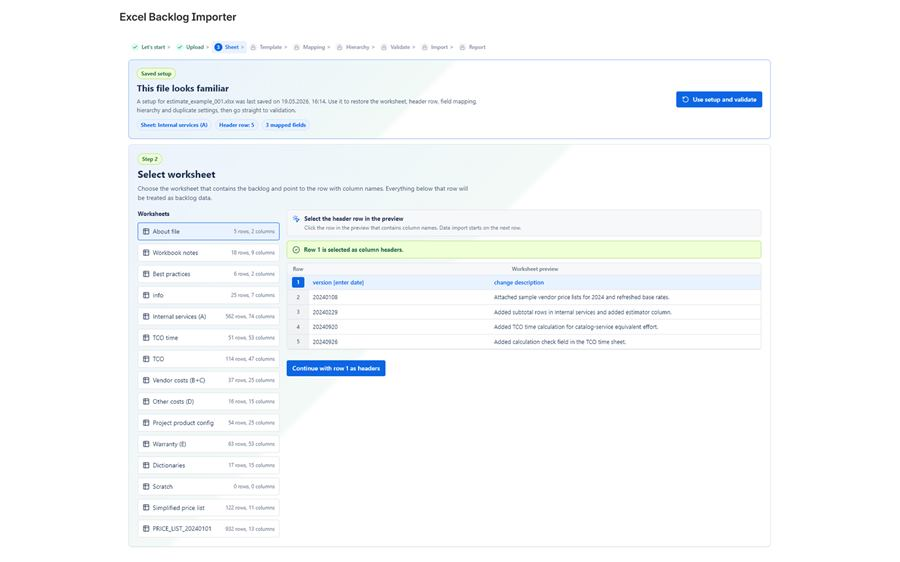
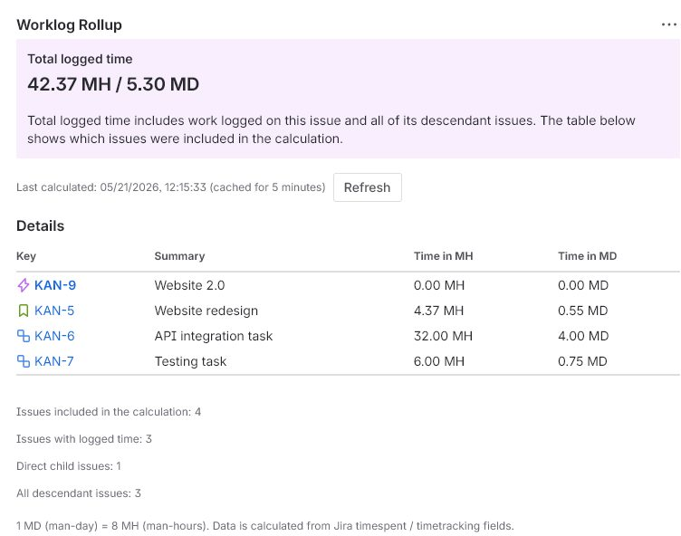

01
Marketplace-facing pagesEach product page links to install, pricing, documentation and support.
Mederak Apps builds focused Atlassian Marketplace apps for teams that need practical improvements inside Jira Cloud: cleaner Excel imports and clearer logged-time totals.
Move structured XLSX backlogs into Jira with mapping, validation, duplicate handling and import reports.

See real logged time for an Epic, Story or parent issue, including deeply nested child issues.

Use the app catalogue to reach product landing pages, documentation, security practices, privacy policies, terms and support contacts.
Each product page links to install, pricing, documentation and support.
Support is handled through support.jira@mederak.pl.
Product security pages describe Forge architecture and data handling.
The apps are intentionally narrow and designed around specific Jira team problems.
Compare the available Jira Cloud apps and continue to the product page that matches your team's use case.